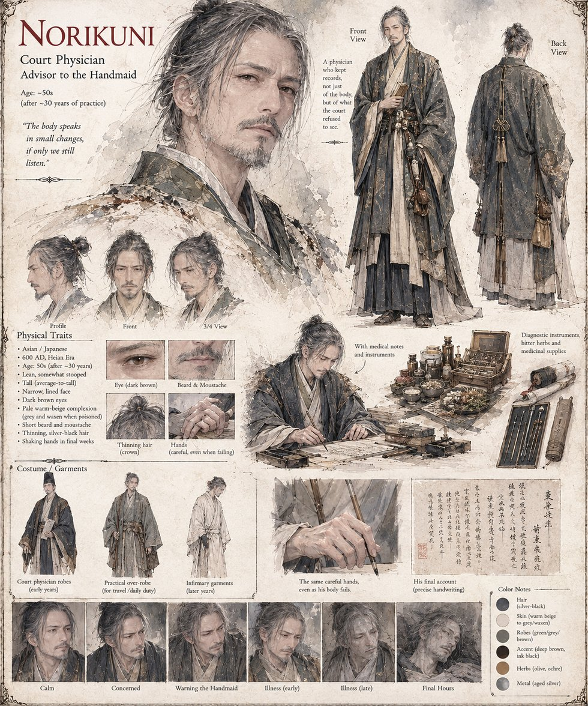

Norikuni
Court Physician · Advisor to the Handmaid
Court physician and advisor to the Principal Handmaid, some thirty years into a practice built on reading small physical changes other people talk themselves out of noticing. He keeps written records not only of bodies but of what the court prefers left unrecorded, and is the one who tries to warn the Handmaid before it's too late. His own final weeks — shaking hands, a complexion gone grey and waxen — read, to anyone who learned to listen the way he taught them, exactly like the poisoning he spent a career diagnosing in other people.
“The body speaks in small changes, if only we still listen.”
Appears In

Related Subjects


Related Records

Norikuni, keeping his records.